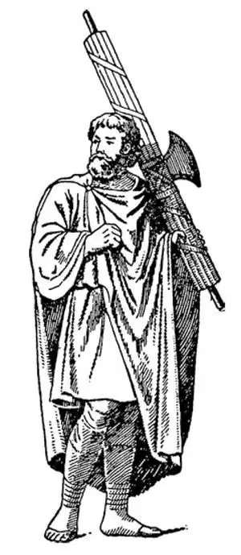

23
Rome Kicks Out Her Kings
罗马人撵走了国王

IN 509 B.C. something happened in Rome. There were two classes of people in Rome, just as there were in Athens: the wealthy people who were called patricians, and the poor people who were called plebeians. We use the same words now and call people who are rich and aristocratic patricians , and the people who are poor and uneducated plebeians . The patricians were allowed to vote, but the plebeians were not allowed to vote.
At last, however, the plebeians had been given the right to vote. But in B.C. Rome had a king named Tarquin. He didn't think the plebeians should be allowed to vote, and so he said they should not. The plebeians would not stand this, and therefore they got together and drove Tarquin out of the city, as the Athenians had driven out their king. This was in 509 B.C., and Tarquin was the last king Rome ever had.
After King Tarquin had been driven out, the Romans started what is called a republic, something like our own country, but they were afraid to have only one man as president for fear he might make himself king, and they had had enough of kings.
So the Romans elected two men each year to be rulers over them, and these two men they called consuls. Each consul had a bodyguard of twelve men. These men were given the name lictors , and each lictor carried an ax tied up in a bundle of sticks. This bundle of sticks with the ax-head sticking out in the middle or at the end was known as fasces and signified that the consuls had power to punish by whipping with the sticks or by chopping off one's head with the ax. Some modern coins and postage stamps have fasces pictured on them.
Perhaps you have seen fasces used as ornaments or decoration around monuments or public buildings.

Lictor carrying fasces
（扛着“法西斯”的扈从）
One of the first two consuls was named Brutus the Elder, and he had two sons. The king, Tarquin, who had been driven out of the city, plotted to get back to Rome and become king once more. He was able to persuade some Romans to help him. Among those whom he persuaded were, strange to say, the two sons of Brutus—the new consul of Rome.
Brutus found out this plot and learned that his own children had helped Tarquin. Then Brutus had his sons tried. They were found guilty, and in spite of the fact that they were his own children, he had the lictors put both of them to death as well as the other traitors to Rome.
Tarquin did not succeed in getting back the rule of Rome in this way. The next year he tried again. This time he got together an army of his neighbors, the Etruscans, and with this army he attacked Rome.
Now, there was a wooden bridge across the Tiber River, which separated the Etruscans from the city of Rome. In order to keep the Etruscans from crossing into the city, a Roman named Horatius, who had already lost one eye in fighting for Rome, gave orders to have this bridge broken down.
While the bridge was being chopped down, Horatius, with two of his friends, stood on the far side of the bridge and fought back the whole Etruscan army. When the bridge was cracking under the blows of the Roman soldiers, Horatius ordered his two friends to run quickly to the other side before the bridge fell.
Then Horatius, all by himself, kept the enemy back until at last the bridge crashed into the river. Horatius then jumped into the water with all his armor on and swam toward the Roman shore. Though arrows the Etruscans shot were falling all around him, and though his armor weighed him down, he reached the other side safely. Even the Etruscans were thrilled at his bravery, and, enemies though they were, they cheered him loudly.
There is a very famous poem called Horatius at the Bridge , which describes this brave deed.
A few years after Horatius, there lived another Roman named Cincinnatus. He was only a simple farmer with a little farm on the bank of the Tiber, but he was very wise and good, and the people of Rome honored and trusted him.
One day when an enemy was about to attack the city—for in those days there always seemed to be enemies everywhere ready to attack Rome on any excuse—the people had to have a leader and a general. They thought of Cincinnatus and went and asked him to be dictator.
Now, a dictator was the name they gave to a man who in a case of sudden danger was called upon to command the army and in fact all the people during the time of the danger. Cincinnatus left his plow, went with the people to the city, got together an army, went out and defeated the enemy, and returned to Rome, all in twenty-four hours!
The people were so much pleased with the quick and decisive way in which Cincinnatus had saved Rome that they wanted him to keep right on being their general in time of peace. Even though they hated kings so much, they would have made him king if he would have accepted.
But Cincinnatus did not want any such thing. His duty done, he wanted to return to his wife and humble home and his little farm. In spite of what many would have thought a wonderful chance, he did go back to his plow, choosing to be just a simple farmer instead of being king.
The city of Cincinnati in Ohio is named after a society which was founded in honor of this old Roman, who lived nearly five hundred years before Christ.
【中文阅读】
公元前509年，罗马发生了一件大事。和雅典一样，罗马社会也分为两大阶级：富人和穷人，分别叫做贵族和平民。今天我们还在用这两个词，把那些富有而有气派的人叫“贵族”，而把没钱又没受过教育的人叫“平民”。在古罗马，只有贵族才有选举权，而平民是没有选举权的。
后来，平民也享有选举权了，但在公元前的罗马，一位名叫塔克文的国王认为平民们不该享有选举权，于是，他就下令剥夺了平民的选举权。平民们无法忍受这一点，因此，他们联合起来将塔克文赶出了罗马城，就像雅典人赶走他们的国王一样。这件事发生在公元前509年，塔克文也就是罗马的最后一位国王。
塔克文国王被赶走后，罗马人开创了现在所谓的共和政体，有点像现在的美国，但是他们担心，只让一个人做总统的话，他可能会自立为王，而他们已经受够国王了。
因此，罗马人每年选举两个人做他们的统治者，他们把这两个人称为“执政官”。每个执政官各有一支十二人组成的卫队，卫队成员叫“扈从”，每个扈从都扛着一束木棍。这束木棍的中间或是一端有一把斧头，这束插着斧头的木棍叫“法西斯”，表示执政官有权用棍子抽打或用斧头砍掉人头来实施惩罚。有些现代的硬币和邮票上有法西斯的图案。
可能你们在一些纪念碑或公共建筑物上看到过作点缀或装饰用的法西斯图案。
第一任的两个执政官之一叫老布鲁图，他有两个儿子。被赶出罗马城的国王塔克文密谋回到罗马，再登上王位。他说服了一些罗马人给他提供帮助，奇怪的是，这些人中就有罗马新执政官布鲁图的两个儿子。
布鲁图发现了这个阴谋，也知道了自己的两个儿子帮助了塔克文。后来，他把两个儿子送上了法庭。他们被判有罪，尽管他们是自己的亲生骨肉，他还是让扈从们把他俩和其他叛乱者一起处死了。
塔克文以这种方式夺回罗马王位的计划没有成功。第二年，他又卷土重来。这 次，他从邻国伊特鲁里亚人那儿召集了一支军队，然后，率领这支军队前来攻打罗马。
当时，台伯河上有座木桥，将伊特鲁里亚人隔在罗马城外。为了阻止伊特鲁里亚人过桥入侵罗马城，一个名叫贺雷修斯的罗马人下令把这座桥拆掉，贺雷修斯之前在保卫罗马的战斗中失去了一只眼睛。
这座桥被砍倒的时候，贺雷修斯和他的两个伙伴还站在桥的尽头抵抗着整个伊特鲁里亚人的军队。听到桥在罗马士兵的砍击下发出断裂的声音，贺雷修斯命令他的两个伙伴在桥塌之前尽快跑回罗马那边去。
此时，只有贺雷修斯一人在抵挡敌人，直到最后这座桥倒塌在河里。穿着全副盔甲的贺雷修斯随后跳进了河里，奋力游向对岸的罗马城。尽管伊特鲁里亚人射出的乱箭纷纷落在他身边，尽管身上笨重的盔甲带着他向下沉，他还是平安到达了对岸。甚至连伊特鲁里亚人也被他的勇敢震撼了，尽管他们是罗马人的敌人，他们还是情不自禁为他高声欢呼。
有一首非常有名的诗叫《桥上的贺雷修斯》，描述的就是他的英勇壮举。
贺雷修斯死后没几年，又出现了一个名叫辛辛纳图斯的罗马人，他只是个在台伯河边拥有一小片土地的简朴的农民，但是他非常睿智仁厚，所以，罗马人对他既尊敬又信任。
有一天，有支军队将要攻打罗马——因为在那个时代，似乎总有敌人准备以各种借口攻打罗马——罗马人此时必须有一位领袖和将军。他们想到了辛辛纳图斯，请他出任“独裁官”。
当时，所谓的独裁官是大家在紧急关头推举出来统率军队的人，其实也是在危难之时领导全民的人。辛辛纳图斯扔下了手中的犁，和大家一起来到罗马城，召集了一支军队，出城迎击并打败了敌人，然后回到罗马。所有这一切从开始到结束不超过二十四小时！
人们为辛辛纳图斯如此迅速而果断地拯救了罗马城而欢呼雀跃，所以，希望他在和平时期就这么继续做他们的将军。尽管他们对国王痛恨无比，但是如果辛辛纳图斯愿意接受的话，他们也情意奉他为国王。
但是，辛辛纳图斯可不想要这些头衔。尽了自己的责任，他就想回到妻子身边，回到自己那简陋的家和他那一小块田里去。尽管众人都认为这是个千载难逢的好机会，但是，他依然解甲归田，选择做一个普通农夫，而不是当国王。
美国俄亥俄州的辛辛那提市，是以一个社团的名字而命名的，这个社团就是为了纪念这位生活在公元前500年左右的古罗马人而创建的。